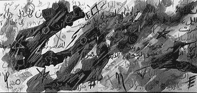
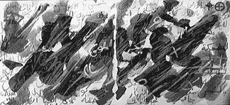
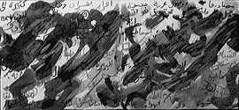
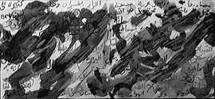

Notes on unfolding writing: the mystic transfer
By Etel Adnan
My friend Ricky was starting to paint in a folding book. He had already covered a few pages when I arrived and in a short while looked at me, passed on the work to my hands and said that I surely would like to work the way he did, and that the book was mine to continue . It was clarly a mystic transfer, a gesture in the logic of Being, something that came from a place preceding him and that had to go, to keep going, to acquire a new transiency, an open-ended trust.
When I came home, unfolded the book and looked at my own brushes and inks, I thought that I had to do some drawings the way I knew. I drew, I remember, a Chinese ginger vase that I had, then a flower pot with some flowers, then my own inkpot...so different from Rick's drawings!
But that new format started to preoccupy my mind: I had to do something I never did, to find a way of thinking adequate--for me--to this new material. I realized how much materials, for artists, are things that mediate thought, how much they condition one's aesthetic choices, how much they become the elements of one's expression, and instead of being just a support, they become in a way a co-author of one's work.
I know I'm telling a story, but story is always superior to theory, albeit theory is. . . another story.
Things happen in time, therefore they always constitute story: the unfolding of one's mental operations is akin, it appeared to me, to these long horizontal scrolls that are not meant to be grasped in a single vision like a painting, but rather to be read , visually, in sequence, like an ordinary book that you cannot read in a single glance.

This sense of reading attached to the very format of these "scrolls" brought to my mind poetry and literature. I felt that kinship between script and the horizontality of the paper, I suddenly saw that I was going to write poetry on these papers and paint watercolors with the sentences, verses, or words. I opened up to myself, with exhiliration, a new artistic world whose possibilities I was going to explore by the very acts of painting.
I used Arabic poems: Arabic script has in its essence infinite possibilities, and of course they have been explored and practically exhausted by classical calligraphy and by the geometric patterns made of sacred verses, and turned into clay tiles which ornament the great mosques of the Islamic world.
My endeavor has nothing to do directly with this classical heritage which is based on the codifications of script and on the perfection of codified brush strokes.
I used my (extremely imperfect) handwriting, figuring out the visual possibilities of the manipulation of letters and words given the elasticity of Arabic script. To give an example: a single letter can be as short as the tiniest possible script or can be extended to cover a whole page or, by extension, any size possible or imagined.

I was more than just interested in this new approach, I was having the feeling that there was something sacred about it: I felt close to the icon painters of the past: they were in awe of the fact that they were dealing with sacred history, I was dealing with the combination of poetry, script and painting, I was finding a way out from the past (classical calligraphy), and still carrying on to new shores the inherent possibilities of Arabic writing: I was discovering, by experiencing it, that writing and drawing were one. So, the watercolors or ink drawings and the writing of the poetry were constantly unified in the visual field of the art work.
This approach, which combines literature and art and which has been fundamental to Chinese and Japanese art, and which is transformed here, seems to bring out a sense of becoming, of fluidity, of constant transformation, as being essential to the mind: the mind never rests on these scrolls as it moves back and forth on them as a scanner. This experience transforms those visual, written words, and the paintings of which they are a part, into a kind of musical score that each person, including their maker, translates into his/her inner language, or languages, into that which we call the understanding.
Working for years in this direction led me to the suspicion that our mental world is an on ongoing "translation," that perception is a translating of the object of that perception, and that any thought that we may think to be primordial, spontaneous, is already an interpretation of something which precedes it and may even be of another nature, another "stuff" than thinking itself, a wavelength, an "it" which remains unknown, a translation of this "it" by an active filtering function we call the "mind."
 
Excerpted, by permission of the author, from "The Unfolding of an Artist's Book." Discourse, 20. 1&2. 1998
Ink drawings by Etel Adnan, photographed by Trinh T. Minh-ha.
Bio: Etel Adnan is an American poet born and raised in Beirut, Lebanon. She taught Philosophy at Dominican College, San Rafael, CA. for fourteen years, and since then spends her time mostly in California but also in Paris and Lebanon. She is the author of a novel, Sitt Marie-Rose and many works of poetry. She is also a painter and a tapestry designer. She collaborated with Robert Wilson on the French section of his opera "Civil warS."
go to this issue's table of contents